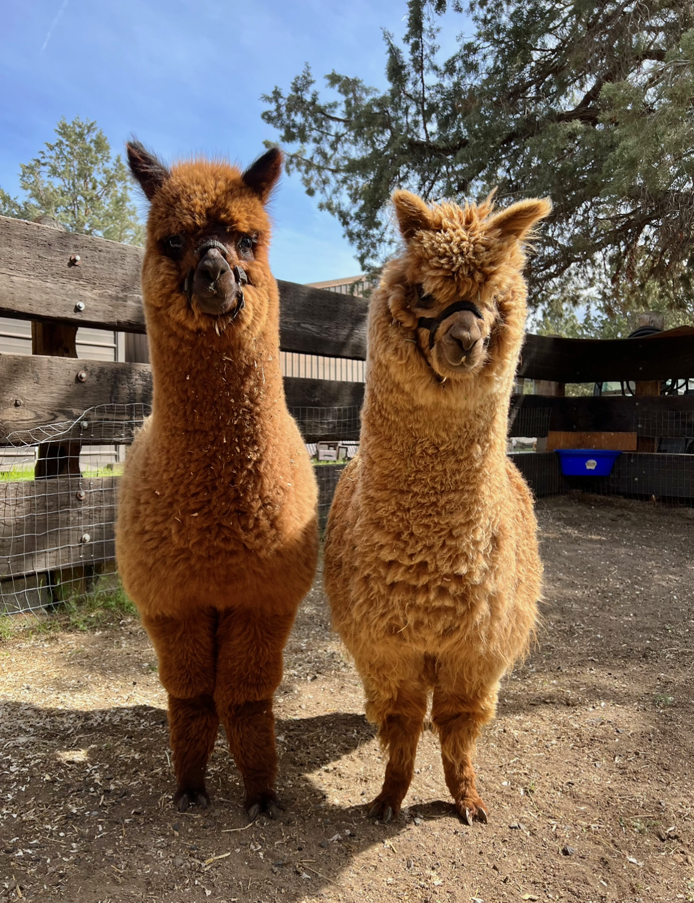

Camelid Fun Under the Trees: NWCF's 2024 Fundraiser
Llama and alpaca enthusiasts gathered in central Oregon in August, hosted by Crescent Moon Ranch.
Read the full recapDesign System & Element Reference — styles.css?v=brown72
All colors are defined as CSS custom properties on :root. Never use raw hex values in HTML or CSS — always reference the token.
| Token | Primary Use | Do not use for |
|---|---|---|
--brown | Nav, footer, dark sections, dark CTAs | Body text, inline links |
--terra | Links, section labels, filled CTA button, card links | Large background fills (too saturated) |
--gold | Accents on dark backgrounds only | Text on light backgrounds (fails contrast) |
--bg | Page body background | Card/panel surfaces |
--surface | Cards, form inputs, white sections | Page body (too stark) |
--panel | Alternating section backgrounds (warm stone) | Text |
--light | Body text on dark (--brown) backgrounds | Text on light surfaces |
--muted | Supporting copy, metadata, captions | Headings, CTAs |
Headings: Source Serif 4 — var(--font-heading) — Google Fonts
Body: Inter — var(--font-body) — Google Fonts
Body copy. The Northwest Camelid Foundation has funded veterinary research since 1987. We support OSU and WSU and bring owners together across the Pacific Northwest.
.lead
For over 35 years, the Northwest Camelid Foundation has funded the veterinary research that keeps llamas and alpacas healthy. 1.125rem · lh 1.8 · color: --muted.
.section-label (eyebrow)
Our Mission
.card-link
Explore our research →
<a> inline link
Visit our research page to see the full list of funded studies. Links use --terra and hover to --brown.
<blockquote>
"Every dollar raised at our events goes directly to research. There is no overhead, no administrative cost — just science."
| Token | Value | Example |
|---|---|---|
--size-xs | 0.75rem | Section labels, badges |
--size-sm | 0.875rem | Meta, captions, small text |
--size-base | 1rem | Body copy (default) |
--size-md | 1.125rem | .lead text |
--size-lg | 1.375rem | h4 / sidebar headings |
--size-xl | 1.75rem | h3 headings |
--size-2xl | 2.25rem | h2 headings |
--size-3xl | 3rem | h1 headings |
--radius-sm
4px
--radius-md
8px
--radius-lg
16px
Pill buttons
100px
--shadow-sm
--shadow-md
--shadow-lg
--shadow-xl
| Context | Value | Token / Notes |
|---|---|---|
| Section vertical padding | 5rem | .section { padding-block: 5rem } |
| Page hero padding | 4rem top / 4rem bottom | .page-hero { padding: 4rem 0 } |
| Container padding | 1.25rem sides | .container { padding-inline: 1.25rem } |
| Max content width | 1100px | --max-width |
| Nav height | 100px | --nav-height |
| Section-label → Heading gap | 1.5rem | .section-label { margin-bottom: 1.5rem } |
| h1 → content gap | 1.5rem | h1 { margin-bottom: 1.5rem } |
| h2 → content gap | 1.25rem | h2 { margin-bottom: 1.25rem } |
| Card padding | 1.75rem | .card { padding: 1.75rem } |
| Grid gap (2-col) | 2rem | .grid-2 { gap: 2rem } |
| Grid gap (3-col) | 1.5rem | .grid-3 { gap: 1.5rem } |
| Animation duration | 0.2s ease | --transition |
All buttons use the base .btn class plus a variant. Buttons are pill-shaped (border-radius: 100px). Use .btn-lg for hero and CTA contexts.
| Context | Use |
|---|---|
| Primary CTA on light bg (hero, events, research) | .btn .btn-primary |
| Secondary/ghost action on light bg | .btn .btn-secondary |
| Donate CTA in CTA Band (dark section) | .btn .btn-filled |
| Secondary action on dark section | .btn .btn-light |
| Donate pill in nav header | .nav-donate a (auto-styled) |
| Large hero or CTA context | Add .btn-lg to any variant |
We award grants to qualified veterinary researchers at OSU and WSU, funding studies that directly improve camelid health outcomes.
Explore our research →Llama and alpaca enthusiasts gathered in central Oregon in August, hosted by Crescent Moon Ranch.
Read the full recapCard icons use terracotta tint background (--terra-light) with terracotta stroke. Size: 22×22px SVG.
| Class | Background | Used for |
|---|---|---|
.section (no modifier) | --bg parchment (body) | Mission cards, default sections |
.section.section--bg | --surface white | News, alternating sections |
.section.section--panel | --panel warm stone | Events teaser, alternating sections |
.section.section--brown | --brown dark + atmospheric overlay | Dark feature sections (avoid overuse) |
.feature-section | --brown dark with radial gradients | Research Spotlight on homepage |
.cta-band | --brown dark with radial gradients | Bottom of homepage before footer |
.impact-bar | --brown dark compact | Stats bar on homepage |
"Every dollar raised at our events goes directly to research. There is no overhead, no administrative cost — just science."
— Northwest Camelid FoundationLlamas and alpacas produce uniquely small antibodies — called nanobodies — that are revolutionizing drug development.
Read the full research →Every donation goes directly to veterinary research and scholarships.

Collapses to single column at 768px breakpoint.
Collapses to 2-col at 768px, 1-col at 480px.
Used on interior pages (events, research, scholarships) for main content + sidebar. Main column is wider; sidebar is narrower.

llama-portrait.pngalpaca-closeup.png
alpacas-pair.png
alpaca-at-fence.png
alpacas.png| Context | Treatment |
|---|---|
| Hero image | .hero-media — border-radius: 16px, box-shadow lg, object-fit:cover |
| Page hero image (about, events) | 100% width, max-width 420px, border-radius:16px, box-shadow lg |
| Events photo banner | .events-photo-banner — 21:9 aspect, border-radius:16px, object-position center 30% |
| Board / committee headshots | Circular, fixed width (on about.html) |
| All images | Always include descriptive alt text. Use loading="lazy" for below-fold images. |
Northwest Camelid Foundation — Style Guide · styles.css vbrown65 · Last updated March 2026
← Back to Site